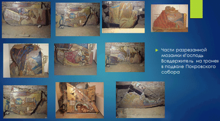
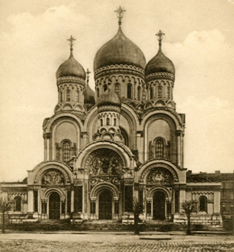

Мозаичная композиция "Господь Вседержитель на троне"

Данное мозаичное панно до начала нынешнего века считалось утраченным, т.к. не имелось информации о его местонахождении.
Эскиз для мозаики был написан Н. А. Бруни, предположительно, писал в период с 1900 по 1904гг.
Размер данного панно был больше, чем другие привезённые мозаичные композиции и по высоте, и по длине. Это и стало одной из причин, почему мозаика Н. А. Бруни не была установлена на стены строящегося Покровского собора. Она просто не помещалась ни на одну из стен. А после установки меньших по площади 5-ти мозаичных композиций над боковыми входами и в алтаре других вариантов, кроме как складировать её в подвале, не осталось. Вторая возможная причина, по которой мозаика «Господь Вседержитель на троне» не была установлена на стены даже частично, это сильная раздробленность на мелкие части и отсутствие важных фрагментов, что не позволяло образовать полную композицию пусть и с утратами.

По сохранившимся фотографиям и открыткам западного входа Варшавского собора и кусков мозаики, видно, что в центре мозаичной композиции изображён Христос в полный рост, сидящим на золотом троне в окружении шести ангелов. Ближняя пара ангелов изображена стоящими на коленях и держащими в руках Зерцало, кадило и раскрытую книгу с текстом: «Заповедь новую даю вам Да любите друг друга». Две пары ангелов на заднем плане изображены стоящими со склонёнными головами, держащими в руках хоругви с текстом на славянском языке: «Свят Свят Свят». Вся композиция имеет золотой фон.
Сейчас в Свято-Покровском храме в одном из помещений цокольного этажа оборудован музей храма. Там хранятся 11 больших кусков и сотни мелких фрагментов мозаичной композиции «Господь Вседержитель на троне».
Используя этот эскиз и старые фотографии , шаг за шагом на ПК составлялись кусочки мозаики. В результате чего была частично восполнена мозаичная композиция «Господь вседержитель на троне» на 60%.